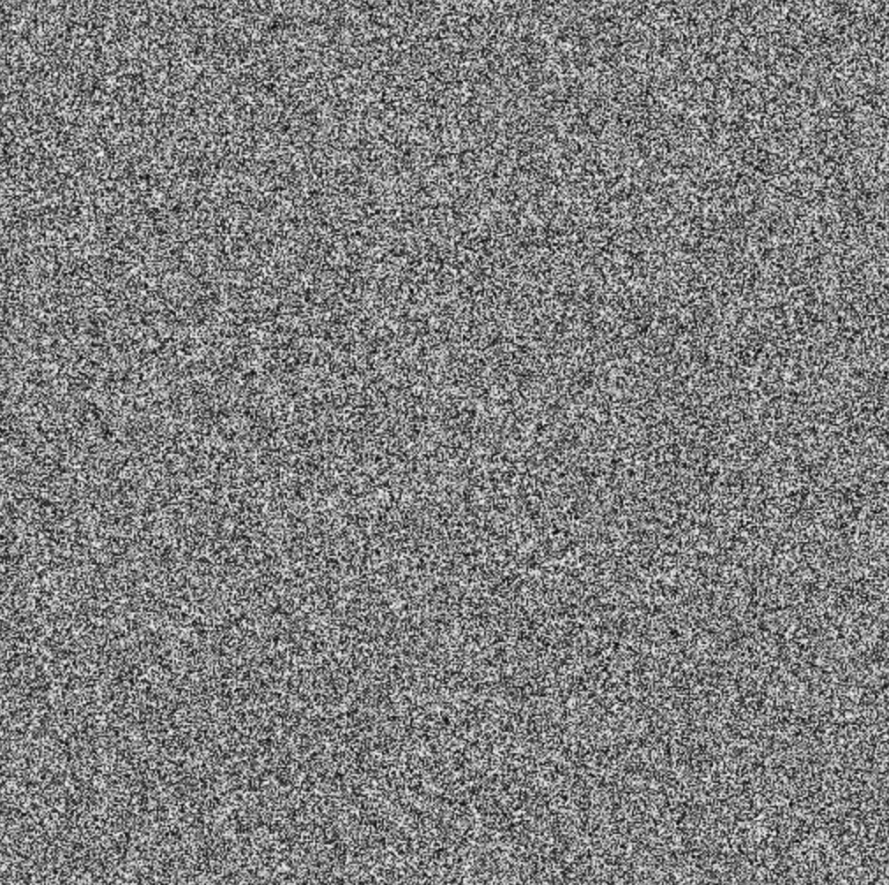
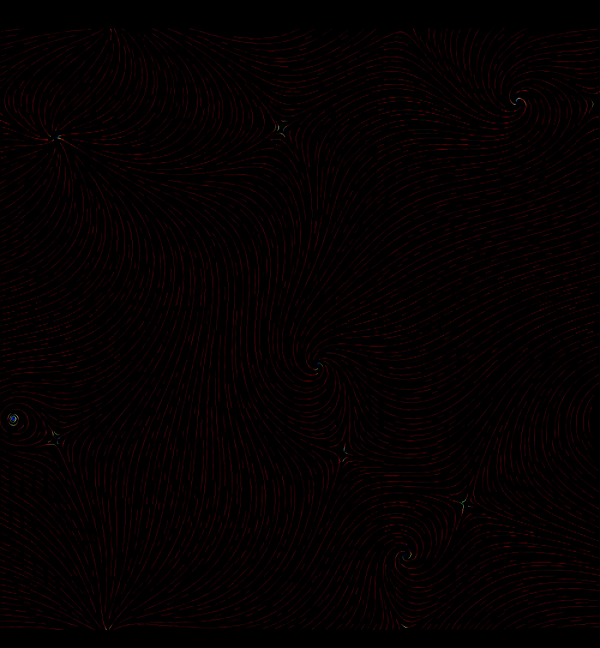
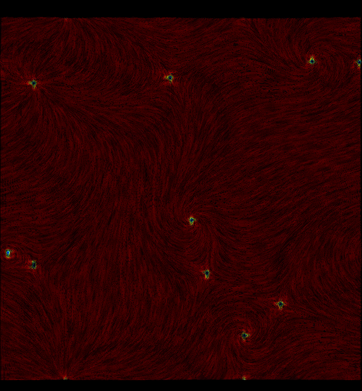

首先，我先做一個武斷的定義，所謂容易閱讀的畫面就是整齊的畫面，反過來說就是如果畫面過於雜亂，就會導致難以閱讀，難以閱讀並不意味著無法閱讀，舉個極端的例子來說，也就是雜訊(noise)圖，雖然只要你專心還是有辦法閱讀，但是不知從何看起，或者更進階一點說，你不知道你的視線要怎麼在畫面中移動。

那相同的雜訊，如果我們為她添加一些趨勢，你會發現儘管乍看之下仍是雜訊，但是圖二容易閱讀的多了，因為這些雜訊對齊了某種規則，讓人可以快速的感受並且理解到畫面。


圖二 用不同密度視覺化的颱風動態
事實上這是我以前visualization的作業，從圖二上可以發現我是在畫面上畫上一堆短曲線，而每段短曲線都是一段雜訊，而圖二下只是將線條的密度增加，因此本質上仍是一堆雜訊，但是顯然的，兩相比較之下，圖二更加整齊，也更容易閱讀，或許你也可以發現視線可以自然的畫面中移動。
換句話說，我認為如果要讓畫面容易閱讀，那麼在畫面上的點、線、面組成的圖形應該要符合某種規律，這個規律可能是我上面舉例的，漩渦，或是一條曲線，甚至是無聊的格線。
回到比較正常的圖畫，來看看米山舞老師的實例
圖三 米山舞老師的作品
如果撇除掉透視、色彩等等，事實上畫面就是一堆大量的色塊，也就是大量的2D圖形，但是觀眾不會感到雜亂，或者至少感受到亂中有序，也就是說我們雖然不太容易直接看出背後的規律，但是我們可以感受到某種趨勢，而正是有這股趨勢才不會覺得畫面雜亂，也才容易閱讀。
換句話說，如果創作時希望畫面容易閱讀，或者有人會說把畫面整理乾淨，我們就必須要主動地去安排畫面中的圖形，這包含了所有的點、線、面，而事實上，所謂的感覺到畫面有動態的前提就是畫面不能雜亂。
那這時後就要來看看反例，這是當初的透視課作業，可以假定這張的透視沒有太大的問題，雖然乍看之下沒有非常雜亂，但是總有種更種元素散落在畫面中的感覺，並沒有明顯的趨勢。
--
如果覺得有幫助到你或是想支持我歡迎給我GP或是贊助！

--
最近慢慢再複習課堂的回放，可能是因為構成課本身的知識點相對分散，整理起來相對麻煩，
因此這次構成的筆記應該會採較短且多篇的形式進行，
不然之前一次寫落落長未必有人會想看